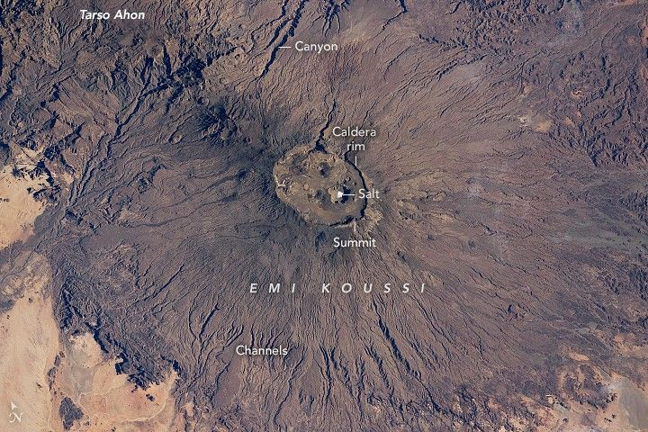

Salty Emi Koussi
An astronaut aboard the International Space Station took this photograph of Emi Koussi, a large volcano in the central Sahara Desert in northern Chad. The volcano’s cone measures 70 kilometers (43 miles) in diameter and displays several dark-toned lava flows on its slopes.
The photo is centered on the volcano’s summit, which lies along the rim of an elliptical caldera that casts dark shadows. The summit reaches an elevation of 3,415 meters (11,204 feet), making it the highest peak in the Sahara Desert. The surrounding desert flats are marked by light-toned sands.
A prominent feature in the caldera is the white salt-covered bed of a small dry lake. This salt bed lies at the caldera’s lowest point, many meters (approximately 745 meters / 2,450 feet) below the summit of Emi Koussi. Several circular volcanic vents within the caldera can be seen in the high-resolution version of the image.
Numerous dry stream channels appear as thin lines on the flanks of the volcano, radiating away from the caldera. Despite very low rainfall in the region, geologists think that such channels were formed by water-driven erosion that occurred over thousands of years. Several channels on the lower slopes, including those toward the bottom of the image, are marked by shadows.
A line of small, circular cones and vents appears on the volcano’s north flank. The line runs toward the slopes of Tarso Ahon, another large volcanic mountain. A depression between Emi Koussi and Tarso Ahon is occupied by deep canyons that cast the largest shadows. One canyon is 600 meters (2,000 feet) deep and leads water west, while the other is 250 meters (700 feet) deep and leads water east. The canyons formed in the depression due to the concentration of water runoff from both Emi Koussi and Tarso Ahon.